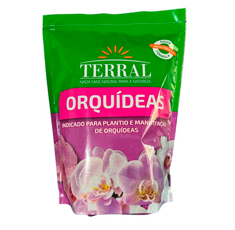
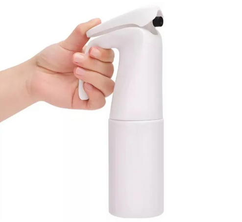

Kit Completo
Kit Básico de Cultivo
R$ 58,00
Conjunto com os itens úteis mais essenciais para a sua rotina de cuidado.
Ver detalhesR$ 58,00
Conjunto com os itens úteis mais essenciais para a sua rotina de cuidado.
Ver detalhes
R$ 18,50
Mistura perfeita de casca de pinus e esfagno para oxigenação das raízes.
Ver detalhes
R$ 27,90
Acessório ergonômico para umidade delicada sem encharcar as folhas.
Ver detalhes